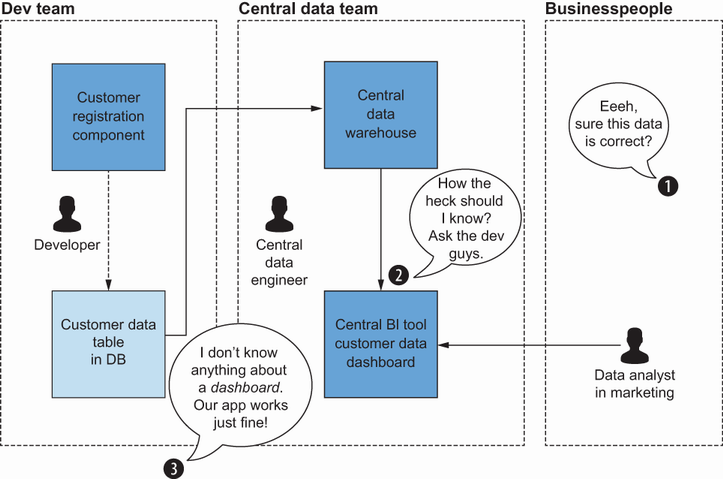
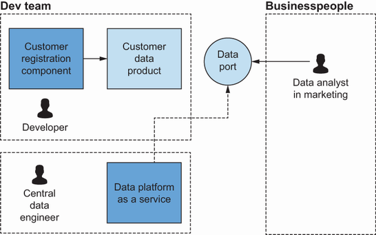
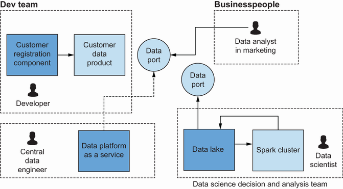
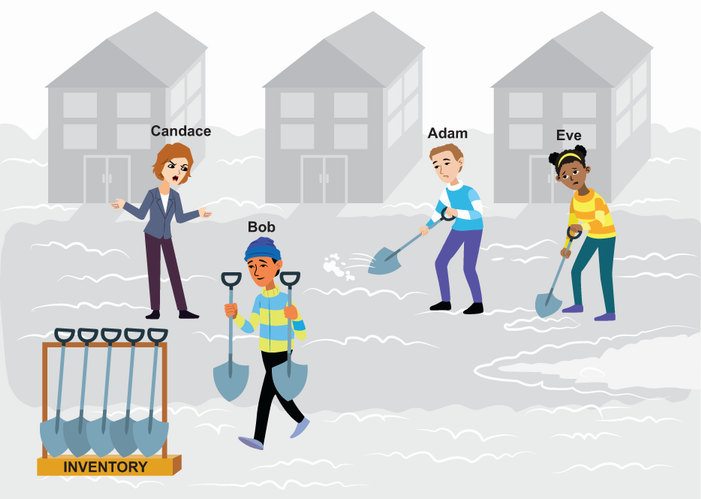
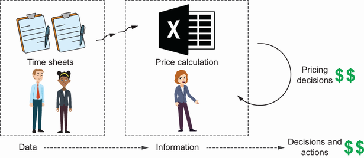
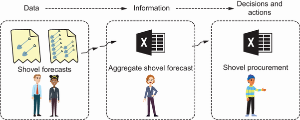
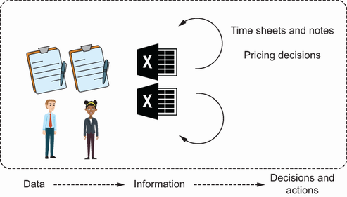
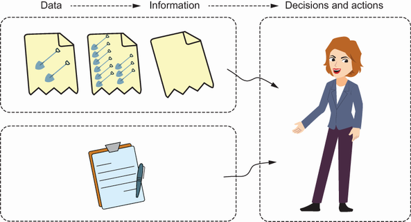
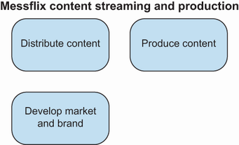

Content Outline
- Why data mesh emerged and which limits of centralized models it addresses.
- How decentralized domain ownership changes accountability for data.
- How raw data, information, and decision value connect in operational contexts.
- The four data mesh principles and their practical impact.
- How federated governance and a self-serve platform support domain teams.
- Key organizational and technical tradeoffs to evaluate during adoption.
S01 - Data Mesh as a Socio-Technical Shift
Understanding why the data mesh is a socio-technical paradigm shift.
Identifying possible data mesh implementation challenges.
The data mesh is a decentralization paradigm. It decentralizes the ownership of data, its transformation into information, as well as its serving.
The data mesh paradigm is disrupting the data space. Large and small companies are racing to showcase their data mesh–like journey all over the internet.
But because the data mesh is a topic of ongoing debate, with only slowly emerging best practices and standards, the need emerged for an in-depth material that covers both the key principles that make data meshes work and examples and variations needed to.
provides conceptual tools, including the key data mesh principles and boots-on-the-ground insights and examples. The focus is practical guidance rather than exhaustive theory.
The section presents the core ideas of the data mesh, as well as the benefits and challenges associated with it. The section also provides a definition of a data mesh, focused on outcomes and practicality.
S02 - Decentralized Data Ownership
The data mesh paradigm in this context is all about decentralizing responsibility. For instance, say the development team for the customer registration component of a company also creates a dataset to analyze registered customers.
But this deceptively simple definition has a lot of implications because, in most companies, data is handled as a by-product. It is usually turned into value only after being put as a by-product into storage, then pulled into a central technology by a.

S03 - Limits of Centralized Data Platforms
The centralized technology in the form of storage and the usual data engineering/ data science machinery.
Since the development team considers the data a by-product, the ownership is implicitly assigned to the data team. But such central teams usually cannot keep up with the business knowledge specific to multiple areas of operations.
The data mesh paradigm shift calls for decentralization of the responsibility for data—to consider it an actual product. The situation depicted in can turn into a data mesh if, for example, the development team provides the data product straight to the analysts through a.
A platform team could help provide a simple technology as a service to be used by development teams to quickly deploy such data products, including the data ports. Data producers focus on developing data products, which, together with data consumers, start to.
Even in the small example, the analysis shows a significant operational paradigm change. It encompasses both a shift in the ownership responsibility (from a central data team to the development teams) and the technical challenge of making the new setup work.
Introducing changes in the operational paradigm will result in ripples affecting many areas of the business. To prevent these ripples from becoming chaos, clear guiding principles are required.
Since Dehghani’s introduction of the data mesh approach, many data mesh – inspired business-derived and theoretical examples have appeared. A lot of this content might not perfectly fit into the initial description of the data mesh framework.
In the work, as well as in this context, the approach prioritizes solutions that are first and foremost practical (hence the title, Data Mesh in Action ). Therefore, the data mesh definition aims to be broad and functional and emphasizes decentralized efforts.
Definition Data mesh is a decentralization paradigm. It decentralizes the ownership of data, the transformation of data into information, and data serving.
The goal of implementing a data mesh is to extract more value from the company’s data assets. That is also the reason this definition remains so lightweight and inclusive in relation to the level at which each principle is followed.

S04 - Why Centralization Becomes a Bottleneck
Three main reasons explain why decentralization is needed in data work.
With the proliferation of data sources and data consumers, a central team in between creates an organizational bottleneck.
With multiple data-emitting and -consuming technologies, a central monolithic data storage in between creates a technological bottleneck, which loses a lot of the information in this step in the middle.
Both data quality and data ownership are only implicitly assigned, which causes confusion and a lack of control over both.
Over the past 30 years, most data architectures were designed to integrate multiple data sources; that is, central data teams merged data from all kinds of source systems and provided harmonized sets to users, who in turn tried to use them to drive business.
Some approaches simply seem to not work out. Dozens of reports and dashboards seem to be of no use compared to the costs of creating and maintaining them.
One of the reasons for the scalability problem is the proliferation of data sources and data consumers. An obvious bottleneck emerges when one central team manages and owns data along its whole journey: from ingestion through transformation and harmonization to serving it to all.
The other problem arises from the monolithic nature of data platforms, such as warehouses and lakes. They often lack the diversity to reflect the reality encoded in data derived from sources and domain-specific structures.
This problem is commonly observed in real projects. A car parts manufacturing company was buying data related to failures of various parts.
Two more interwoven factors exacerbate the problems described earlier. One is unclear data ownership structure; the other is the responsibility for data quality.
Similar challenges in software engineering led to domain-driven design and microservices. Applying comparable principles to data engineering contributed to the data mesh model.
S05 - Centralized and Technology-Centric Alternatives
There are two main alternatives to decentralized data ownership; the following summary outlines both.
The first option is the centralization of both people and technology. This is the default setup for any startup.
The second option splits up the work not by business domains, as data mesh suggests, but by technology. This usually results in one core data engineering team being responsible mostly for ingesting data and provisioning a data storage infrastructure.
There is nothing wrong with these two approaches. They might be reasonable default options, but both fail to align with value creation, which is deeply tied to business domains.
So, one way or another, both of these alternatives will hit a wall at some point: adding the next data source or data science project will feel extremely complex and costly compared to earlier ones. That’s the point where organizations typically consider decentralized alternatives.
S06 - Data Mesh and Central Storage Compatibility
There is a misconception about the data mesh. It is sometimes perceived as an exclusive alternative to the central data lake or the central data warehouse.
That still leaves the option to have central data storage and decentralized units working and owning the data. Indeed, that is a common implementation in companies that don’t need complete flexibility on the data producers’ side.
Data meshes make heavy use of both data lakes and data warehouses in various formats. Data meshes, in general, do not try to focus on any specific technology.

S07 - Business and Technical Value of Data Mesh
analyzes the potential of a data mesh implementation from two perspectives: through the eyes of the business decision-makers and the technologist.
From a business perspective, raw data alone has limited value and introduces storage and management costs.
A good approximation of this phenomenon is the DIKW pyramid, derived from The Rock, a play written by T.S. Eliot in 1934.
Data in isolation is only a set of values. Value emerges when context is added to support informed decisions.
As established earlier, raw data alone is insufficient for decision-making. Local downloads do not resolve context and quality issues.
To download the data, it needs to be accessible.
To ensure the value of any performed analysis, data needs to be as complete as possible.
Data mesh emphasizes access quality: data must be accessible, findable, interoperable, and reusable.
Completeness of the data is another concern where data mesh shines. Unlike most data warehouse or data lake architectures, data products and their data models are not developed by IT specialists apart from the business.
Data mesh increases value at higher decision layers by enabling rapid access to interoperable data sources.
In theory, similar access could be enabled through a data lake. In practice, central bottlenecks in access and transfer management often limit responsiveness.
S08 - Scalability, Ownership, and Delivery Speed
From a technical perspective, a key benefit is preserving delivery speed as organizational complexity grows. The data mesh is meant to address the shortcomings of other data.
The other benefit of data mesh is the clarity of data ownership right from the point of its creation. This approach flattens the data management structure, leaving just a thin layer of a federated governance team.
The speedup of development also comes from empowering the implementation teams. Since producing and maintaining the data products rests on their shoulders, the speed of change is not limited by a single central integrations team’s backlog of tasks.
The other factor worth mentioning is data environment stability. With data products offering access to contracted versions of their datasets, pipelines built on them are much more robust and require much less maintenance.
S09 - Candace Scenario: Central vs Decentralized Flow
Candace operates a snow-shoveling business. She is a proud businesswoman who started the business shoveling snow herself every winter.
Adam and Eve are responsible for operations and client acquisition in their respective areas.
In the previous year, Candace asked Adam and Eve to record working times and houses cleared, then consolidated the data in a spreadsheet to set prices.
In this model, Candace converted data from Adam and Eve into operational information and then into pricing decisions. She also requested rough estimates to support planning.
Adam and Eve provided raw data to Candace. She then aggregated it into information and handed it over to Bob to turn the data into decisions and business value.
However, the outcome was unsatisfactory and margins remained weak.
In the next cycle, Candace experiments with a decentralized operating model and introduces the foundations of a data mesh.
Candace stops collecting the times and instead asks Adam and Eve to record their times themselves in any way they see fit.
Adam and Eve will set the pricing for their streets.
When Eve increased prices on Oak Street and Adam reduced prices on Pine Road, results reflected stronger local knowledge than centralized pricing assumptions.
With end-to-end ownership of data, information, and pricing decisions, Adam and Eve improve local outcomes. As profits increase, Candace extends the approach.
To avoid confusion and to-and-fro emails, Adam and Eve create a spreadsheet. They update it regularly, so if current conditions or weather forecasts change their estimations, their information is timely.
In the data flow, Adam and Eve now keep both data and information in their domains. They try to supply Bob with a proper set of information, not just the raw data they were asked to collect, so he can make the procurement decisions.
An unexpected business benefit of shortening the data flow emerges. In the past, Adam and Eve usually presented Candace with pessimistic approximations because they did not want to be left without shovels.
Because the estimates were unreliable, Bob frequently adjusted procurement decisions with manual judgment, increasing operational risk.
Candace sees improved profit through lower costs and clearer responsibilities. The key factor is redesigning the data-to-decision pipeline.
This mechanism improves outcomes by decentralizing decisions where local domain knowledge is strongest.
A subsequent step is lightweight governance, such as update-frequency rules and access controls for shared planning data.
The next sections define the four principles that frame practical data mesh implementation.





S10 - Principle 1: Domain Ownership
Dehghani first described the current incarnation of the data mesh concept as a set of four principles. the focus is on their implementation details.
The first principle states that data and related components must be owned and maintained by the domain closest to the source and meaning of that data.
Domain teams are responsible for exposing interfaces that let analysts, data scientists, and application teams consume domain data safely and effectively.
Data ownership must be explicit and assigned to the domain closest to data creation and usage.
The domain is an area or part of the business. It is a way of slicing and decomposing the company.
The domain ownership principle says that each team or unit owning a domain should also own the data that has been created inside that domain. So, the team developing software to support content production is also responsible for content production data.
Being responsible for data means hosting and serving datasets to other parts of the organization (to other domains). The team is the owner of the data, and it also should be responsible for pipelines, software, cleansing, deduplicating, or enriching the data.
As in agile delivery, ownership is effective only when paired with autonomy. This is why teams should be able to release and deploy their operational and analytical data systems autonomously.
As shown in the Messflix example, every business consists of many domains. Each domain can usually be further split into subdomains.
In such a mesh of interconnected domains and subdomains, only the people close to the data know it well enough to actually work with it. Take an example from earlier: does the word content mean the same in all three domains?
For example, a developer in the Distribute Content domain may misinterpret terms from Produce Content without direct domain context.
However, people outside this domain will not even know that these are important pieces of data. This will make the people inside the domain the only people truly able to work with this kind of data.
Source data domains usually serve data and information that represent facts about the business. Data should be exposed to other domains to serve operational purposes (like the REST API) and analytical purposes.
Consumer data domains are aligned closely with consumption. An excellent example of such a domain could be Provide Management Reporting and Predictions.
Parts of the data between data domains can be duplicated. Still, because that data is serving a different purpose, it will also be modeled differently.
Shared data responsibility increases scalability and maintainability; adding datasets becomes the addition of autonomous nodes.

S11 - Principle 2: Data as a Product
The second principle is that data must be viewed as a product. This calls for an introduction of product thinking (integrated into data management).
Usually, when discussions about data, the first thing that comes to mind is either a file or a table in a database. practitioners often envision a spreadsheet or a series of rows in a file with named columns.
Without a proper set of descriptions, even the best prepared set of data will not be found and thus no value prepared from it. If it is unknown how current or complete the data might be, this could render it completely useless.
In the experience, data offered by a data team should follow typical product features like these.
- Viable quality This quality can be ensured by specialized domain experts.
- Anticipation of user needs The team offering the data to the outside world should understand the enterprise’s business environment. For example, present the data in a format easily digested by existing data pipelines to ensure its availability and effortless usefulness.
- Secured availability The team should ensure availability of the product whenever users need it.
- Focus on user goals The data team’s focus on its own domain should not mean a lack of communication with other users; on the contrary, the search for synergies and shared toolsets should create an opportunity to understand each other’s needs better.
- Findable Any data product should be discoverable by a simple means, something a random table in a database lacks.
- Interoperable Different data products should be combinable in a way that increases their value.
S12 - Product Thinking Applied to Data
In everyday contexts, many products are used. A product might be defined as, in general, the result of a conscious action.
It should also meet some standards to ensure that a pair of jeans will not break down after a few hours of use and is made of a safe material. In addition, there should be someone responsible for this product: for example, its quality.
Treating data as a product will mean that someone has consciously designed the product, created and released it, is responsible for it, and is mainly responsible for its quality. In the context of a data mesh, this will be the responsibility of the data.
S13 - Designing for Data Product Usability
Treating data as a product requires more than exposure; it requires high usability for downstream users.
Referring to the Messflix example, It is possible to imagine a few exemplary data products in the Produce Content domain.
S14 - Core Characteristics of Data Products
Treating data as a product requires starting from user problems and designing around them.
Data as a product also implies a degree of standardization that allows a single element to be incorporated into a larger data mesh ecosystem. To call a given set of data a data product, it should have the following characteristics.
- Self-described and discoverable Data should be described, and this description should be an integral part of the data product. The data product should be able to register itself in the data mesh ecosystem, and, as a result, should be discoverable.
- Addressable It should have a unique address (e.g., in the form of a URI address), so that it can be referred to and relationships between data products can be created.
- Interoperable A data product should be made according to predefined standards, concerned with the form of data sharing, standardized formats, vocabularies, terminology or identifiers, security, and trustworthiness. A data product should meet the established and declared service-level agreement (SLA), and should enable controlled access.
S15 - Technical Building Blocks of a Data Product
While fulfilling the previously established conditions, a data product should at the same time constitute an autonomous component, so that it can be independently developed by the team responsible for it. From the point of view of a technical solution, It is possible to observe a.
- Input logic and output ports Form and protocols used to ingest from the source and expose data to consumers.
- Operational metrics Number of users, throughput, amount of data fetched, etc.
- Data quality reports Quantity of incomplete data, format incompatibilities, statistical measures of outliers, etc.
- Metadata Specification and description of the data schema, domain description, business ownership, etc.
- Configuration endpoint Means to configure the data product in run time (e.g., setting the security rules).
These are a few examples of what can constitute a data product as a technical component.
S16 - Principle 3: Federated Computational Governance
The third principle is to federate and automate data governance across all participants of the data mesh. This principle aims to provide a unified framework and interoperability to the ecosystem of largely independent data products.
Federated computational governance requires two inseparable elements: the governing body and a means of rule enforcement. Overarching rules and regulations should be agreed upon by a body composed of data product owners, a self-serve data infrastructure platform team, security specialists, and CDO/CIO/CTO representatives.
Effective data governance is crucial, as data security is one of the main concerns of CDOs/CIOs in companies covering all sectors and sizes. Also, most large enterprises need to introduce controls on data security and governance that are enforced by governmental or business regulations.
S17 - Balancing Local Autonomy and Central Rules
At first glance, the data mesh is an additional layer of complexity in an already vast scope of data governance that now also needs to address a shift of responsibilities to data products. Each data product, in turn, needs to be equipped with processes.
There is no universal formula for balancing central governance and local autonomy. The approach will always depend on the specifics of the organization.
Another set of policies is required to ensure interoperability of data products and the ability of data consumers to join them together readily. Finally, the procedures need to provide the compatibility of various data products without explicitly enforcing an overarching data model.
The data mesh tries to answer that need with federalization of data governance. Federalization in this context means having a governing structure operating at parity at distinct levels—central and local.
Data product teams, led by data product owners, are responsible for developing their products with a high degree of autonomy, deciding on all technical and procedural problems (within boundaries of the enterprise technology stack). There is no silver-bullet solution as to the precise division.
S18 - What Federated Computational Governance Means
Federated computational governance combines shared cross-domain policy with automated enforcement in platform capabilities.
Data governance elements, which can be automated and embedded into a data platform, include but are not limited to the following.
S19 - Shared Master and Reference Data
Catalog, reference, and master data.
Once again, no silver-bullet solution exists for deciding which of these should be automated. It will require the teams’ hard work to identify which data governance tasks create bottlenecks in data mesh development in the organization and to automate them.
S20 - Principle 4: Self-Serve Data Platform
The fourth principle is to extract the duplicated efforts of the data mesh into a platform. This principle calls for the application of platform thinking to the data context.
As shared cloud services reduce duplicated infrastructure effort, an internal self-serve data platform reduces duplicated data-platform effort across domains.
It may be appropriate to start with the requirements of the first data product owners and iteratively build the setup up to meet the organization’s needs. The infrastructural support can be offered as on-premises computing power or in the cloud, depending on the enterprise policies.
- Governability All data computation related to data governance processes needs to be incorporated and automatically enforced on every data product connected to the data infrastructure.
- Security The infrastructure solution should ensure that all data products offer freedom of operation for users whose access allows them to meet their information requirements and ensure safety from unauthorized access. To do that, a set of ready-to-use processes, tools, and procedures should be.
- Flexibility, adaptability, and elasticity The infrastructure needs to support multiple types of business domain data. This means enabling various data storage solutions; extract, transform, load (ETL) and query operations; deployments; data processing engines; and pipelines.
- Resilience Smooth operation of data-driven businesses requires high availability of data. Therefore, the infrastructure should ensure redundancies and disaster-recovery protocols at the design level of each infrastructural element.
- Process automation From injecting metadata at the data product registry to ensuring access control, the data flow through the central infrastructure needs to be fully automated—possibly using machine learning (ML) and artificial intelligence (AI) to ensure efficient data processing, quality, and monitoring.
revisits Candace's case to evaluate alignment with the four principles.
S21 - Domain Types in a Business Context
In Candace’s business, several domains can be identified, including procurement and the two street-level operating areas.
In the first year, local teams operated their domains but did not own decision-ready data products, and governance remained informal.
In Candace’s second year, she makes a key change. She gives Adam and Eve data ownership in their domains.
In the third year, Adam and Eve treated their outputs as data products for downstream consumers such as Bob, improving procurement quality.
In summary, Candace focuses mostly on the principle of decentralized data ownership and data product thinking. Since her operation is small, she doesn’t need to do much governance besides talking with her employees about using data in decision-making.
Data mesh adoption can begin in organizations of any size when decentralization pressure becomes operationally significant.
This illustrates why decentralization pressure emerges over time.
S22 - Data Mesh as Organizational Architecture
The data mesh is not a technical solution for data problems. The data mesh solves these problems by using a socio -technical architecture, or a socio-technical system design.
First, it is necessary to understand what it means, how it originated, and most importantly, the underpinning laws behind it. For that, Conway’s law to understand why it is not possible to change technology just on its own.
S23 - Conway's Law
Conway’s law is defined as follows.
Organizations tend to produce system designs that mirror their communication structures.
Melvin Conway described this effect in 1968; in practice, the coupling between communication structure and system design is consistently strong.
A common analogy is Aikido, where strategy emphasizes redirecting existing motion rather than opposing it directly.
S24 - How Organization Shapes Data Architecture
Conway’s law explains why a 'central data warehouse' usually implies operation by a central data team.
Conway’s law highlights alignment between organizational structure and technical architecture; technology-only changes are usually insufficient.
S25 - Socio-Technical Co-Design
In a socio-technical approach, organizational design and technical architecture are co-designed so constraints and tradeoffs are addressed from the start.
Team Topologies is a widely adopted method for socio-technical design focused on optimizing flow and team interaction patterns.
Team Topologies helps organizations align team boundaries with desired architecture and delivery flow.
S26 - Cognitive Load and Team Boundaries
Cognitive load is the amount of mental effort required to perform a task; keeping it manageable is essential for sustained delivery performance.
Teams should be designed so cognitive load stays within sustainable limits and is focused on value-creating work.
Data mesh performance improves when platform and tooling choices match team capability and reduce unnecessary complexity.
All of the data mesh principles are influenced by socio-technical ways of thinking. Domain-oriented decentralized data ownership and architecture reduce the load by decentralizing responsibility for domains and corresponding data.
Data as a product reduces collaboration between teams to access data by making data findable, accessible, interoperable, and reusable. It limits the load by exposing data in an expected and known format and ports by consuming teams.
Federated computational governance makes collaboration between teams easier by enforcing common standards and patterns. It enables team members’ transfers by reducing the possible technology stack within the company.
Each principle reflects socio-technical design, where organizational structure and technical architecture evolve together.
S27 - Data Mesh Tradeoffs and Limits
Data mesh is neither a silver bullet nor a plug-and-play solution. Instead, its successful implementation requires overcoming an array of challenges.
S28 - Tooling as a Core Enabler
The most crucial technological challenge of data mesh implementation is ensuring that proper tooling is available to both domain-focused and central platform data teams. Providing only data discoverability and links between domains may prevent the whole ecosystem from becoming a siloed world.
The other challenge is ensuring that the tooling developed locally can be shared across domains. The flexibility and autonomy of teams should not lead to inefficiencies at the company level and reduced synergy.
With a plethora of distributed, semi-independent data products, the development of consistent monitoring, alerting, and logging procedures becomes a challenge. As a result, both central platform and domain teams need to collaborate closely to ensure continuous insight and control over data quality and security.
S29 - Interoperability and Data Management Challenges
Like the first technological challenge, the critical data-management-related challenge is ensuring that data is easy to locate and comprehensively documented. The importance of a data catalog cannot be overestimated.
Another challenge is ensuring control over the duplication of data across domains. With each new business domain needing to be served with repurposed data, redundancy may emerge.
The third challenge is not specific to data mesh; however, it is necessary to remember it when embarking on a data mesh journey. It lies in cross-domain analytics.
S30 - Organizational Challenges to Adoption
Organizational challenges in the data mesh context can be divided into three categories: scope, data practices, and culture. The first organizational challenge is the scope of such a paradigm shift.
Second, it does require a level of maturity in the handling of data by multiple parties. Centralized parties, data creators, managers, and users will need to learn to handle data with a certain level of proficiency.
Third, in most enterprises, going from data as a by-product to data as a product will be a substantial cultural shift. This shift will involve not only data engineers and IT departments, but also product, management, marketing, and sales departments, and most other departments.
Decentralizing the decision-making process, shaping data product owner positions, developing multiple cross-functional teams, and shifting responsibilities requires a significant restructuring of existing organizational charts. Moreover, such changes come with costs in time, brainpower, and finances.
Federated governance requires the development of novel procedures; this extends from decision-making to communication methods. These responsibilities and principles have to be appropriately identified and federated.
At this stage, data mesh can be evaluated as a socio-technical operating model with explicit principles, benefits, and tradeoffs.
S31 - Decentralization as the Core Design Choice
- The cornerstone of the data mesh is decentralization moving ownership and responsibility for data closer to its source. This approach aims to keep data in sync with the subject matter, removing bottlenecks caused by long data pipes and central team inefficiencies.
The data mesh is a socio-technical architecture paradigm based on principles of domain-oriented data ownership, treatment of data as a product, federated computational governance, and self-serve data infrastructure as a platform.
Domain-oriented data ownership means the data and its relevant components should be owned, maintained, and developed by the people closest to it (the people inside the data’s domain).
Treating data as a product means a conscious design of the outcome presented to the outside environment, clearly assigned roles for ensuring that outcome availability and quality, and autonomy of development required to produce that outcome.
Federated computational governance means two things. First, the responsibility for data governance is split between the central body responsible for company-wide policies and standards and the owners of highly autonomous units, usually domain-oriented, responsible for the development of actual systems.
Self-serve data infrastructure means extracting the duplicated efforts of the data mesh into a platform; thus it is done only once but offered as a service to others.
The data mesh is not a precisely defined solution. The extent of application of each principle differs widely from application to application, and it will vary depending on the business case.
When considering the data mesh implementation, the organization must take into account major technological, data-management-related, and organizational challenges.
Key takeaways
- Why data mesh emerged and which limits of centralized models it addresses.
- How decentralized domain ownership changes accountability for data.
- How raw data, information, and decision value connect in operational contexts.
- The four data mesh principles and their practical impact.